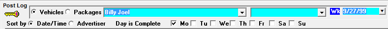
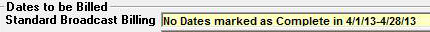

Post Log Options
User Security Options
There are specific settings in User Options -> Selected Fields that determine the types of Post Log changes a user is allowed to make.
- Change Fill Spot Invoice Status in Post Log: If set to green, the user can click in the Spot Price field in Post Log to toggle through the different options available about whether a fill spot should appear on the invoice or not. Also, when set to red, spot prices are not shown on the Post Log screen.
- Hide Spots: If set to red, then the hide icon will not be available.
- Change Billed Spots in Post Log: If set to red, the user cannot move any billed spots that are missed or aired.
Site Options Preferences
Sales Tab
In the Site Options -> Sales tab, there is a setting “Set Post Log Moved Spots as MGs/Outsides/Ask” that determines how spots that are moved outside of their ordered daypart will be recorded in Post Log (and on invoices).
- If set to MG’s (Makegoods), all spots moved outside of their ordered daypart will be set as makegoods, and will be labeled as makegoods on the invoice/affidavit.
- If set as Outsides, all spots moved outside of their ordered daypart will be set as outsides, and no attention or special indication will be shown for them on the invoice/affidavit.
- If set to Ask, you will be asked how you would like your moved spot to be recorded (as a makegood or outside).
Invoice Tab
In the Site Options -> Invoice Tab, the setting “Day is complete testing” affects posting and invoicing. The question is unchecked by default. If checked on, check boxes appear in the Post Log screen for each day of the week and that are used to mark each day as posted when posting has been completed.

When this option is enabled, you cannot run invoicing if each day within the billing period is not checked as being complete. If days are not marked as complete, you will receive a warning message when attempting to run invoices that lists the incomplete date range.

To assist in managing this feature, the Log Posting Status report can be used. It indicates whether a day is or is not complete, and can provide a summary of the completed status per day per vehicle.
Vehicle Options
In the Vehicle -> Options -> Sales tab, there is a setting “Allow overbooking of avails: yes/no”.
- If set to Yes, you will be able to book more makegood and bonus spots into avails than there is time in the avail (in other words, you can overbook the avail).
- If set to No, you will only be able to move a spot into an open avail for which there is sufficient time available for the spot to air. If an attempt is made to move a spot into an avail that does not have enough time available, a message will appear that reads “Move not allowed because avail would be overbooked”.
Final Invoicing and Post Log Rules
Post Log updates are disallowed in the month that is being invoiced if final invoices are being generated. If a user attempts to access Post Log while final invoices are in the process of being generated, they will receive a warning message and be prevented from updating any spot information in the month being generated. If a user is in Post Log at the time of a second user attempting to start generating final invoices, the second user will be prevented from generating final invoices until the other user has left the Post Log screen. Note that this does not affect preliminary or reprint invoices – only final invoices.